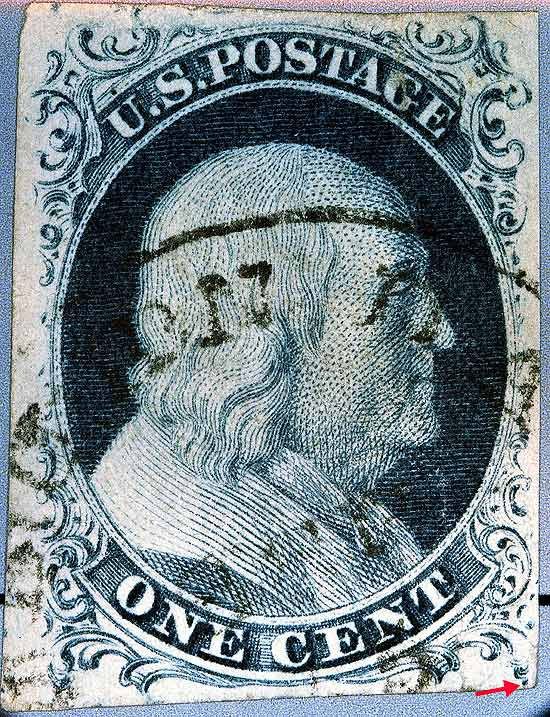
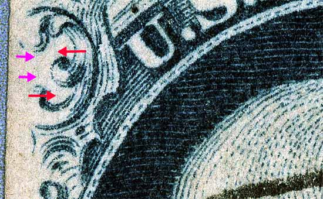
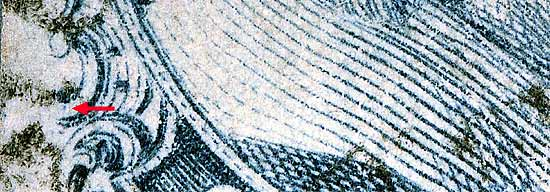
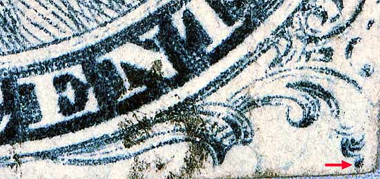

1¢ Franklin Issue of 1851-1857, PLATE 2 Pos 85L2, (Scott #7) |
| Scott #7 Blue, Type II, Relief B Issued both imperforate and perforated. Perforated copies are more scarce. One other plating indicator for 9th row positions is the presence of the "dingle". The "dingle" is normally found on "A" relief positions. The presence of a "dingle" on "B" relief's is useful when plating because it only shows up on "B" relief's from the 9th horizontal row. Violet arrows below indicate marks of interest not shown on the plating diagrams and are not known if constant or reliable. |
|  |
| Figure 1. (BELOW) Detail view of a vertical mark or plate scratch found across Ornament A and B as illustrated in the Ashbrook/Neinken plating diagrams.
 |
| Figure 2. (BELOW) Small dot of color in Ornament G not illustrated in the plating diagram but confirmed as consistent.
 |
| Figure 3. (BELOW) Detail view of the GUIDE DOT position.
 |
DISCLAIMER and COPYRIGHT INFORMATION: Thanks for visiting this site. I hope you learn something new as we are making new discoveries all the time. You, the visitor, have my permission to link to my pages and to share the INFORMATION with others. The images themselves fall under the fair use guidelines established by the United States Congress and Copyright law. Basically contact us before using. I also ask in return that you send me an e-mail if I have made a mistake, or have made some other technical blunder that in my rush to put these pages up would cause the visitor confusion. Please also visit my other website at www.slingshotvenus.com. and support the live music arts. While your there, be sure to purchase our music. There are not many philatelic rock stars around and we need all the help we can get. :-) I can be reached at: nerdman@ix.netcom.com Update 10/15/06 |